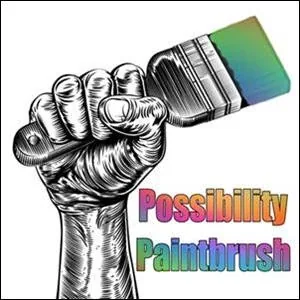
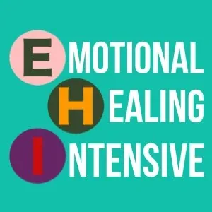

Doorway on Strikingly
CLOSING DOORWAYS
In the same way that the first lesson for a judo, karate or aikido student is to learn how to fall well, the first skill for a space navigator to learn is how to close a doorway.
You might not want to find, make, go to, or open a Doorway unless you already know how to close it.
Remember the fable of the Sorcerer's Apprentice? It's actually an important map about not opening Doorways until you know how to close them...
The following 5 experiments are 5 different procedures for closing a doorway.

CLOSE DOORWAYS BY SPLITTING YOUR ATTENTION
Matrix Code DOORWAYx.01
Some doorways you really don't want to go through. You've seen time after time, what happens when you let yourself slip through into the space of Low Drama. You've seen what happens when you get sucked in by a television advert and lose Your Attention.
Now you want something different. It's time to learn to close doorways.
This experiment is about closing a doorway by guarding or blocking the doorway yourself. This means to put yourself in front of the doorway with your back towards the door. To close a doorway by putting yourself in front of the doorway is a fairly obvious method to use for closing that door for someone else. However, you can use the same procedure for shutting the door for yourself.
For the next 3 days, practice closing doorways by Splitting your Attention, using your Clicker and putting yourself in front of the doorway with a sign that says "don't go here". In that case it helps to refer to previous incidents or examples when you went through such a door and the consequences were dire or expensive.
For example, you negotiate with yourself that when you start hearing trigger sentences you won't allow yourself to go there. For example, listening to a salesman selling beachfront property , or surewin multi-level marketing investment opportunities, or diet herb package programs. Split off yourself and like turning off the television, stand in front of it.
After doing this experiment for 3 days, please register Matrix Code DOORWAYx.01 in your free account at StartOver.xyz. In the Proof section, please write the details of a doorway you closed by Splitting your Attention. This Experiment is worth 1 Matrix Point.
CLOSE DOORWAYS WITH CONSCIOUS ANGER
Matrix Code DOORWAYx.02
This experiment is about using your Conscious Anger (archived — not captured) to make a boundary (archived — not captured) that closes a doorway. A boundary functions like an energetic wall - there's no way through.
A marvellous example of closing a doorway with Anger is Gandalf in Lord of the Rings stamping his magic staff and shouting at the monster "You Shall Not Pass".
Another example of a boundary would be using low % anger to say "I don't want to go there" to someone's Gremlin proposing a mischievous behavior.
Others examples include saying: "No", "Stop", "Stay Away", "Yes, I want that", "We made an agreement about this and I want you to keep it", "This is not okay, never do that behavior again", "Only do it this way", "This is none of your business", "This is my life", "I will not do that", "Leave me alone", etc...
For the next 3 days, practice shutting doorways by making 3 boundaries per day using low % anger. Write the 9 examples in your Beep! Book.
After completing this experiment, please register Matrix Code DOORWAYx.02 in your free account at StartOver.xyz. In the Proof section, please write the details of boundary you used to close a doorway. This Experiment is worth 1 Matrix Point.

CLOSE DOORWAYS WITH DISTINCTIONS
Matrix Code DOORWAYx.03
This experiment is about using your Anger (archived — not captured) and Sword of Clarity for the procedure of making a Distinction to shut a doorway.
A Distinction is an energetic declaration that if you have the Matrix to hold it, changes who you are and therefore gives you a new possibility for action. Distinctions are more powerful than boundaries.
Examples of distinctions you could make that would close a doorway would be: "This is not your Doorway", "You don't have the Matrix to go through this doorway" or "This doorway is a false doorway - it's a trap!"
For the next 3 days, land 3 distinctions per day to shut a doorway for yourself or someone else. Write the examples in your Beep! Book.
After completing this experiment, please register Matrix Code DOORWAYx.03 in your free account at StartOver.xyz. In the Proof section, please write the details of a distinction you used to close a doorway. This Experiment is worth 1 Matrix Point.

CLOSE DOORWAYS BY SHIFTING SPACE
Matrix Code DOORWAYx.04
Every space contains a particular set of doorways that are open to you.
So how to close a doorway? Change space.
Do it by invoking yourself into a new space that does not contain the doorway.
You could:
- Shrink your Now down so that it's too small for the doorway.
- Start telling a committed, passionate story for a different story world.
- Negotiate with yourself and say the price to go through this doorway is a certain thing and you know that you don't have the matrix to go through that door.
- Close the door to a Lab by saying you need to go through Expand the Box.
- Make a price to go through that door.
- Do the heebeeheebees or 25 pushups
- Run around screaming
- Do a 333.
- Pick up a book, open to a page and just start reading.
- Put glasses on.
This experiment is try out 3 different method for shifting space over the next 3 days. When you notice a doorway in your current space that you don't want to go through - immediately try one of the above methods to shift into another space. Record what happens in your Beep! Book.
After completing this experiment, please register Matrix Code DOORWAYx.03 in your free account at StartOver.xyz. In the Proof section, please write about a space shifting method and what happened! This Experiment is worth 1 Matrix Point.
[
](https://gameworldtheory.mystrikingly.com/)
CLOSE DOORWAYS BY SHIFTING GAMEWORLD
Matrix Code DOORWAYx.05
Gameworlds are the social systems through which we interact with each other.
The doors that are open to you depend upon the gameworld that you are playing in.
At work there are certain doors available. You can ask for a raise or a promotion. Resign. Or go spread gossip around the water cooler.
None of those apply when you're at home with your husband or wife.
Imagine asking them for a promotion. How absurd!
So, one way to close a doorway is to shift into a different gameworld because you cannot access a doorway in one gameworld when you are working in the space of another.
The question then becomes: how can you invoke yourself into the space of a different gameworld.
The answer: a meta-conversation. i.e. having a conversation about the conversation.
Put it on the table. "We've been playing in this gameworld, I want to play in this one".
Then, describe the kind of gameworld you've been in . And the kind you want to shift into.
Exploring just one distinction in the new gameworld means you are already there playing the new game.
You might even get a shock about where you are: "There's the boss. We're in a hierarchy. We've been playing Modern Culture games." Instead, you could be playing in a circular gameworld where the leader is simply the person who goes first.
People can argue and not understand and not agree, but they are still in the new gameworld and you have left the old one behind.
Remember: if you go back to the original gameworld the door is probably still open.
This experiment is to close a doorway by shifting gameworld. Do this with your partner or a friend. Notice a doorway that you don't want to keep going through. What gameworld is it a part of and how can you shift somewhere new without that doorway.
After completing this experiment, please register Matrix Code DOORWAYx.05 in your free account at StartOver.xyz. This Experiment is worth 1 Matrix Point.
[
](http://pmthoughtmaps.mystrikingly.com/)
FIND DOORWAYS FROM A THOUGHTMAP
Matrix Code DOORWAYx.06
Every Thoughtmap contains many doorways. Can you find them?
Remember: you can only go through doorways that are actually where you are right now.
Think you are already nailing asking for what you want but actually you live in a swamp of self-hatred whilst you ignore the needs of your 5 bodies. Then some doors won't be open to you.
First you must find out where you are. Find your x on the map.
This is what your teams are for. They see right through your Gremlin's delusions of grandeur. And can put the poop on the table about where you really are at.
This experiment is to go through the PM Thoughtmaps website, grab a map then ask your possibility team for feedback and coaching about where you are right now and what doorways are open to you.
After completing this experiment, please register Matrix Code DOORWAYx.06 in your free account at StartOver.xyz. This Experiment is worth 1 Matrix Point.
[

](http://asking.mystrikingly.com/)
FIND DOORWAYS WITH A NEW QUESTION
Matrix Code DOORWAYx.07
Asking a new question takes you into a different space where completely different doorways might be open for you to go through.
This experiment is to ask a new question and see what doors open up.
One possibility is to explore your 5 bodies. They each have needs. Coming from Modern Culture, my guess is they are pretty undernourished right now. So take one of the needs that aren't being met right now.
Ask yourself the question: "Where can I get the resources to fulfill this need?"
You could journal with it and let the Bright Principle of Possibility flow through you.
Or you could ask someone else the question and let Possibility flow through them.
My bet is you'll discover many new doorways. Maybe to new practices, books to read or documentaries to watch.
Go through one of them and you won't be the same person anymore.
After completing this experiment, please register Matrix Code DOORWAYx.07 in your free account at StartOver.xyz. In the Proof section, please write the details of what happened on the other side of the doorway! This Experiment is worth 1 Matrix Point.
[

](http://consciousfear.mystrikingly.com/)
FIND DOORWAYS WITH YOUR CONSCIOUS FEAR
Matrix Code DOORWAYx.08
Your Conscious Fear gives you access to the Creator, Magician, Sorceress within.
You can use it to find the holes of incompleteness in the fabric of spaces.
These are doorways. They are precisely the places where Creation is necessary for the space to keep flying.
For example: You are afraid because no-one has put themselves down to cook dinner in your community on Thursday night? Perfect. Not handled, your fear tells you that it'll lead to lots of empty bellies and hangry housemates.
Something else is possible.
Go through the doorway that your fear is opening for you and you might find yourself eating a picnic in the park whilst writing poetry and bathing in the summer sun.
This experiment is to use your fear to find doorways in the spaces you find yourself in over the next 3 days.
After completing this experiment, please register Matrix Code DOORWAYx.07 in your free account at StartOver.xyz. In the Proof section, please write the details of a doorway you discovered. This experiment is worth 1 Matrix Point.
[

](https://energeticblock.mystrikingly.com/)
FIND A DOORWAY BEHIND A BLOCK
Matrix Code DOORWAYx.09
An Energetic Block is a part of your Survival Strategy that protects you from something that was dangerous in your childhood environment. This is a doorway that is currently not open to you, that you block yourself from having access to.
You might have blocked your voice, your heart (from love, or feelings, from vulnerability), your mind (from clarity, memory), your eyes (from seeing clearly, from seeing in the dark), your sexuality, your presence, your ability to take action, your ability to decide, your life energy, your ability to commit, your ability to make plans and agreements, your ability to say "Stop!" or "No!" etc.
You installed it. Now it's time to do the Self Surgery and take it out.
If you go through the procedure you will discover the doorway behind the block! Then you can do the next initiatory process to go through.
This experiment is to ask Your Team for feedback and coaching about a doorway that is near you that you are not noticing, taking advantage of or seeing. What stops you? The block. Do the Emotional Healing Process, remove the block and discover the doorway behind.
After completing this experiment, please register Matrix Code DOORWAYx.09 in your free account at StartOver.xyz. In the Proof section, please write details of the block you removed and the doorway discovered. This experiment is worth 1 Matrix Point.
[

](http://shiftidentity.mystrikingly.com/)
FIND DOORWAYS BY SHIFTING IDENTITY
Matrix Code DOORWAYx.10
Being stuck in a fixed identity is a prison.
For example: thinking of yourself as a 'shy man' means you won't run up and talk to a person who might change your life. E.C.C.O and your Archetypal Lineage are begging for you to make this connection. Talk to the person and a new project or relationship could open up for you. But your Box identity says "No thanks, that's too scary". It narrows the possibilities available to you. Don't end up talking to them.....oh dear, nothing's going to change.
It's time to Shift Identity. To a place where new doorways are available to you.
Your Point of Origin is the centre of gravity that your life revolves around. It can be in many places from Modern Culture, to Adulthood. Each Point of Origin leaves only particular doorways open to you. Want new doorways? Then do the process and move it!
This experiment is to ask for feedback from Your Team about where your Identity or Point of Origin is limiting the doorways and possibilities open to you. Then Shift Your Identity to something new or do the process to move your Point of Origin. See what new doorways are open and go through one of them!
After completing this experiment, please register Matrix Code DOORWAYx.10 in your free account at StartOver.xyz. In the Proof section, please write what identity you shifted into or where you moved your Point of Origin. This experiment is worth 1 Matrix Point.

MAKE A DOORWAY USING YOUR POSSIBILITY PAINTBRUSH
Matrix Code DOORWAYx.11
If you cannot find a doorway this does not mean that you cannot have access to a doorway. What is needed is the skill of making doorways.
Enter the Possibility Paintbrush. This is one of the 13 energetic tools on your Possibility Toolbelt. Perhaps the most powerful!
With it, you can paint a doorway in the wall of the current space into a new space where what you want is possible. You might lay out New Context that builds a bridge for something else being possible here right now.
A fine example of making a doorway is in a cartoon called the road runner, which is a running bird in the Arizona desert who keeps being chased by a coyote. The Road Runner carries with him a pot of black paint and a paintbrush. When he is chased he runs to the cliff face, takes out the paint, paints a doorway, goes through the door and the coyote who does not know how to make that door cannot go through.
This experiment is for 3 days to practice making doorways using your Possibility Paintbrush in all the spaces you find yourself in. Where will you end up?
After completing this experiment, please register Matrix Code DOORWAYx.11 in your free account at StartOver.xyz. In the Proof section, please write about a door you created with your Possibility Paintbrush. This experiment is worth 1 Matrix Point.

MAKE A DOORWAY USING YOUR WAND OF DECLARATION
Matrix Code DOORWAYx.12
There are only two things in life: bullshit and nothing.
Without stories reality is simply neutral sensations in your 5 bodies.
But of course, as humans we can't help but declaring bullshit stories in every moment. Some of them are helpful. Some are not.
Your Wand of Declaration (archived — not captured) is the energetic tool you use to Declare "what is so".
Usually you are declaring unconsciously.
You might think or say "I don't know anything about this", then, Bing! You just used your Wand of Declaration on yourself to declare that you are ignorant. A nice way to avoid having to reach into the Nothingness to provide an answer.
Or, you might say, "This is a computer," then, Bing! You just limited the complex wiring system enveloped in a flat rectangular box you are looking at now as 'a computer' blocking it from being a weapon, a cutting board, or a hammer.
Thankfully, we have the power to consciously declare the stories of your reality: like "what you are", "what this is" or "what they are".
Having different stories about reality means you are already in a different space. You already went through the doorway
This experiment is to use your Wand of Declaration to go through a doorway into a new space. For 3 days, notice when you are using your Wand of Declaration unconsciously. Then for the following 3 days start to consciously declare new stories in the spaces that you find yourself in. You could declare that what you thought was a struggle is actually an adventure. The conversation you've been dreading having is actually an opportunity to experiment.
After completing this experiment, please register Matrix Code DOORWAYx.07 in your free account at StartOver.xyz. In the Proof section, please write about the doorway you created with your Wand of Declaration. This experiment is worth 1 Matrix Point.
[

](http://swordofclarity.mystrikingly.com/)
MAKE A DOORWAY WITH YOUR SWORD OF CLARITY
Matrix Code DOORWAYx.13
Any time you notice a lack of clarity, of attention or of something that you want differently, this is an opportunity for a doorway.
You can make the doorway by using another of your energetic tools called your Sword of Clarity. It's for making a Distinction where before there was none.
For example, you could distinguish between what is being created and what you want to create instead by bringing to light the wildly different results that are being put in motion.
You would say something such as: "When you do it like this, this is what happens, to me, to the space, to our space of relationship, ... If you do this, then this would be the results. Would you be willing to do create this second result instead of the first?"
This experiment is to spend 3 days focusing on noticing any 'lack' in the spaces you find yourself in. This could be a lack of clarity in yourself, or in other people. It could be a lack of what you want in the space. Or of what other people are wanting. Use your Sword to make a distinction and use it to make a doorway into a new space.
After completing this experiment, please register Matrix Code DOORWAYx.13 in your free account at StartOver.xyz. In the Proof section, please write the distinction you created with your sword. This experiment is worth 1 Matrix Point.

MAKE A DOORWAY BY ENTERING ONE OF THE 9 GAPS
Matrix Code DOORWAYx.14
Every space is connected to every other space.
This means you can get to anywhere from here... by using any of the 9 Gaps.
Whatever space you are in right now, whether it's the worst Low Drama with your partner or the most boring Ordinary Space with your friends: something else is possible. The 9 Gaps are always available as doorways you can go through to get somewhere else.
How to enter one of the Gaps?
Start to notice that what seemed to be well held together, whether that's an identity, a space, a belief, a gameworld (or any of the other Gaps) isn't so firm after all.
For example: I have my cup and I am looking at it and I can see that it is weakly welded at the bottom. Using your fear, sense where it is not held well together and you will find doorway for getting access to the Gap in Space. Once in the Nothingness, you can create something else.
This experiment is to choose one of the 9 Gaps to explore over the next 3 days. Try to notice the Gap as much as possible. For example, every time you or someone else is stuck in a fixed Identity: you can find the doorway to the Gap in Identity. Then start to use the Gap to create something different.
After completing this experiment, please register Matrix Code DOORWAYx.14 in your free account at StartOver.xyz. In the Proof section, please write which gap you went through and what you created. This experiment is worth 1 Matrix Point.
[
](http://magetraining.mystrikingly.com/)
MAKE A DOORWAY BY CAVITATING SPACE
Matrix Code DOORWAYx.15
To "cavitate" means to form cavities or bubbles: little empty spaces within something else.
For example, on the inside of a glass, a bubble in your carbonated water starts to form at an invisible little scratch on the side of the glass. That's where the bubble starts to form. It can just be a few molecules big. Tiny in fact.
Guess what: you can cavitate a doorway in a space!
Start with the smallest point where there is any kind of discontinuity in the space. This a break or an irregularity in the space or something that doesn't make sense.
Remember that the Problem is the Solution. It takes a little bit of sand to irritate an oyster into producing a pearl.
Even in a space that seems perfectly hermetically sealed, there are still some discontinuities. Your client might be trapped inside the tightest fort knox survival strategy prison you have ever seen BUT there will still be discontinuities. You can dilate a doorway, a round doorway that you cavitate because of these imperfections. You can lead through the door into a new vast space of Possibility.
This experiment is for 2 days to begin to notice the discontinuities of any space you find yourself in. Write them down in your Beep! Book like an investigator. Then attempt to cavitate a doorway in a space.
After completing this experiment, please register Matrix Code DOORWAYx.15 in your free account at StartOver.xyz. In the Proof section, please write what happened, we are dying to hear! This experiment is worth 1 Matrix Point.
[
](http://path.mystrikingly.com/)
GET TO A DOORWAY BY TAKING YOUR NEXT STEP
Matrix Code DOORWAYx.16
You cannot go through a door before a door is open and you cannot even touch the door until you're at the door.
So the first step is getting to the door.
How to get to the door?
Look at the distance between you and the door and start taking the next step to fill in the distance, to close the separation.
To many doors there is a Path that takes you to the entrance.
Look down and see what is the next step on the path to the doorway.
For example: if your doorway is to grow a garden and you look down and discover that the soil is bad or it's full of weeds or you do not yet have any seeds or there is not water supply to your land then you look down and you go "Okay, to get to this doorway the first thing I need to do is to move these rocks and that will move me along towards the doorway".
Remember: you do not need to see the whole path to take the next step.
"When faced with a problem you do not understand, do any part of it you do understand,
then reassess the problem." - Robert A. Heinlein, The Moon Is A Harsh Mistress
This experiment is to choose a doorway that you want to go through. Then ask Your Team for feedback and coaching about what's your next step to get to the door. Do the next step and see what happens next. Do you get to the door? Or does another next step emerge?
After completing this experiment, please register Matrix Code DOORWAYx.07 in your free account at StartOver.xyz. In the Proof section, please write about your next step and what happened afterwards. This experiment is worth 1 Matrix Point.
[
](http://practiceteam.mystrikingly.com/)
GET TO A DOORWAY BY ASKING SOMEONE WHO KNOWS
Matrix Code DOORWAYx.17
Lost in getting to a doorway?
Someone has been here before and knows the way.
They can help!
They stumbled around trying to find the doorway and know the terrain and what it is like to be lost in unknown territory.
For example: want to go through the doorway of becoming an ETB Trainer? Why not ask someone who has already been through if they can support you or tell you what you need to do to get through the doorway?
They have been there before and can tell you from their experience what you are missing to get to the doorway.
This experiment is to choose a doorway that you want to go through. Then find someone who has already been through. Ask them for possibilities for getting to doorway.
After completing this experiment, please register Matrix Code DOORWAYx.07 in your free account at StartOver.xyz. In the Proof section, please write what you needed to do to get to the doorway. This experiment is worth 1 Matrix Point.
[

](http://emotionalhealingintensive.mystrikingly.com/)
GET TO A DOORWAY BY EMOTIONAL HEALING
Matrix Code DOORWAYx.18
Emotions come from the past and are for healing.
Often they are what's between you and a doorway.
How can you hope to create a website when you are still holding onto the old decision that
"if I put myself out into the world I will be killed"?
Emotions come up for the purpose of your Evolution. They are here right now in your life to help you shift into the next version of yourself who is able to create a whole new set of possibilities for yourself and the world.
This experiment is to ask yourself: what is the emotion that is blocking me from getting to a doorway? Once you have an answer organise an EHP or head to an EHP Dojo to do the process. Notice what shifts afterwards.
After completing this experiment, please register Matrix Code DOORWAYx.07 in your free account at StartOver.xyz. In the Proof section, please write what you needed to do to get to the doorway. This experiment is worth 1 Matrix Point.
[
](http://startover.xyz/)
LEARN A NEW SKILL
Matrix Code DOORWAYx.19
You might be able to see a doorway but not see a visible way for you to get to there.
You might doubt that there is even is a skill that could get you there.
How would your world change if you gained competence in one of these skills that you did not even know was possible to learn?
It's time to: Learn a new skill.
There are thousands of these Possibilitator Skills in the StartOver.xyz gameworld.
This experiment is to jump from website to website until you find a skill that you did not know about and practice it. You will suddenly be at doors that you did not know were even possible. You could learn to Become Unhookable, or Become Centered or to Say What You Want.
After picking a skill and practicing it for 2 weeks, please register Matrix Code DOORWAYx.19 in your free account at StartOver.xyz. In the Proof section, please what the skill was you practiced. This experiment is worth 2 Matrix Points.
[

](http://boxtechnology.mystrikingly.com/)
GET TO A DOORWAY BY LEAVING YOUR COMFORT ZONE
Matrix Code DOORWAYx.20
Going to a doorway to become a new version of yourself will require leaving your comfort zone.
Your Box will try to prevent you. It will use its finest self-preservation techniques to keep you within the marshmallow zone where nothing will change because that is where it think things are safe. It's whole existence is built around stopping you from getting to doorways, especially any new or transformational ones.
So, the way to get to a doorway is to get uncomfortable.
For example, if the doorway you want to go through has to do with building a team, then uncomfortable things might include:
- speaking to a person with more status than you have;
- building a prototype of the doorway situation you are trying to get to, building a prototype out of physical material, drawing;
- paint a scenario using acrylics or oil paints and present this scenario as a set of skills.
This experiment is to list 10 ways for you to become uncomfortable on the way to a doorway and do all of them.
After completing this experiment, please register Matrix Code DOORWAYx.20 in your free account at StartOver.xyz. In the Proof section, please write about the most uncomfortable thing you ended up doing! This experiment is worth 2 Matrix Point.

OPENING A DOORWAY #1
Matrix Code DOORWAYx.21
Just because you have found or made a Doorway, do not assume the Doorway will be open.
Time to learn to pick locks...
OPENING A DOORWAY #2
Matrix Code DOORWAYx.00
OPENING A DOORWAY #3
Matrix Code DOORWAYx.00
OPENING A DOORWAY #4
Matrix Code DOORWAYx.00
OPENING A DOORWAY #5
Matrix Code DOORWAYx.00
GOING THROUGH A DOORWAY #1
Matrix Code DOORWAYx.00
GOING THROUGH A DOORWAY #2
Matrix Code DOORWAYx.00
GOING THROUGH A DOORWAY #3
Matrix Code DOORWAYx.00
GOING THROUGH A DOORWAY #4
Matrix Code DOORWAYx.00
GOING THROUGH A DOORWAY #5
Matrix Code DOORWAYx.00
[

](https://consciousfeelings.mystrikingly.com/)
BRINGING OTHERS THROUGH AN EMOTIONAL DOORWAY
Matrix Code DOORWAYx.31
You can support someone in going through a doorway that could change who they are.
To do this: land clearly in them what the doorway is. Then give them the distinctions and the clarity needed to go through.
For example, whenever you notice someone having a feeling unconsciously, like anger by being fidgetty or blowing out the air, you can open the doorway for them to explore that feeling and hold space for them.
You would start by saying: "I'm noticing you are having a feeling." "Which is it? (Anger, Fear, Sadness or Joy)"
If they don't know about their Anger (archived — not captured), tell them "This is how it goes. You get your towl and let the anger get bigger. Right now you are at 7%. It's a lot bigger than that."
Then guide them to fully feeling their Anger and saying the words that carry its information.
Remember: you cannot force people to go through a doorway. They must do it themselves. If you have tried to show them the doorway several times and they have not gone through then do not persist. Shift the space.
After completing this experiment, please register Matrix Code DOORWAYx.31 in your free account at StartOver.xyz. In the Proof section, please write something you learned about guiding people through emotional doorways. This Experiment is worth 1 Matrix Point.
[

](http://buildmatrix.mystrikingly.com/)
BRING OTHERS THROUGH A DOORWAY WITH DISTINCTIONS
Matrix Code DOORWAYx.32
A powerful Mage skill is to learn to detect the Thoughtware that another person is using in real time as you are talking to them. (i.e. you scan what they are using to think with in the moment)
This can allow you to see the gaps where they do not have distinctions that you have.
Any lack of distinction you can see in them is a doorway you can take them through to allow them to become a new person. You can help them Build Matrix in themselves which will allow them to hold more consciousness.
For example, you are talking to someone and they describe feeling 'depressed'. This means they do not have the clarity of the distinctions about Mixed Emotions. Which is that depression is mixed Fear and Anger. This is a doorway that you can take them through into becoming a new version of themselves through the intense Liquid States about what is really going on.
Remember: Possibility Coaching is about being with the person where they are. It is not helpful to offer someone a doorway to a distinction that is disconnected from where they are right now.
This experiment is to spend 3 days noticing every missing distinction that people in your spaces do not have. If this distinction would be helpful for where they are right now: land it in them in their 5 bodies. Guide them through the doorway.
After completing this experiment, please register Matrix Code DOORWAYx.32 in your free account at StartOver.xyz. In the Proof section, please write about a distinction doorway you took someone through. This Experiment is worth 1 Matrix Point.
[
](http://commitment.mystrikingly.com/)
BRING OTHERS THROUGH A DOORWAY OF COMMITMENT
Matrix Code DOORWAYx.33
A Commitment changes the shape of Your Being. You become a new person who is committed to doing the thing.
Commitment does not happen in the mind. It is a declaration: a decision that changes something in the Energetic Body.
It makes you a different shape which the Universe must conform to by giving you the doorways necessary to do whatever you want to do.
"You will only see, open and walk through the doors the Universe gives you after committing first. You make the first move, the Universe follows." - Anne-Chloe
Read Anne-Chloe's Medium Article Commit Before you Know How to learn more about commitment.
You can guide someone through a doorway of them committing to something and this can change their life.
People often have commitments that they they want to make but if they are living inside their Box they will never take the leap required. You can guide them over the Edge.
For example, say someone mentions that they have been dreaming about going on a trip to South East Asia. It will never happen if it remains as a dream. You can take them through the doorway of turning this into an authentic commitment.
This experiment is to spend 3 days noticing commitments at people's Edge. The moment you notice a commitment someone is wanting to make but not make. Pull out your Sword.
Ask them: "Are you going to commit to making it happen?". This is a yes or not question.
If they don't answer clearly then say: "That means No." You could hold a vacuum listening space by asking them: "What is stopping you from committing? What are your fears?"
If they say "Yes" then make sure their commitment is clear. What is their next step and when will they take it.
After completing this experiment, please register Matrix Code DOORWAYx.33 in your free account at StartOver.xyz. In the Proof section, please write about a commitment doorway you took someone through. This Experiment is worth 1 Matrix Point.
BRING OTHERS THROUGH A DOORWAY BY BEING A PIRATE
Matrix Code DOORWAYx.00
BRINGING OTHERS THROUGH A DOORWAY #5
Matrix Code DOORWAYx.00
CLOSE A DOOR BEHIND YOU #1
Matrix Code DOORWAYx.00
Learn to use your Clicker
CLOSE A DOOR BEHIND YOU #2
Matrix Code DOORWAYx.00
CLOSE A DOOR BEHIND YOU #3
Matrix Code DOORWAYx.00
CLOSE A DOOR BEHIND YOU #4
Matrix Code DOORWAYx.00
CLOSE A DOOR BEHIND YOU #5
Matrix Code DOORWAYx.00
VANISH A DOORWAY #1
Matrix Code DOORWAYx.00
VANISH A DOORWAY #2
Matrix Code DOORWAYx.00
VANISH A DOORWAY #3
Matrix Code DOORWAYx.00
VANISH A DOORWAY #4
Matrix Code DOORWAYx.00
VANISH A DOORWAY #5
Matrix Code DOORWAYx.00